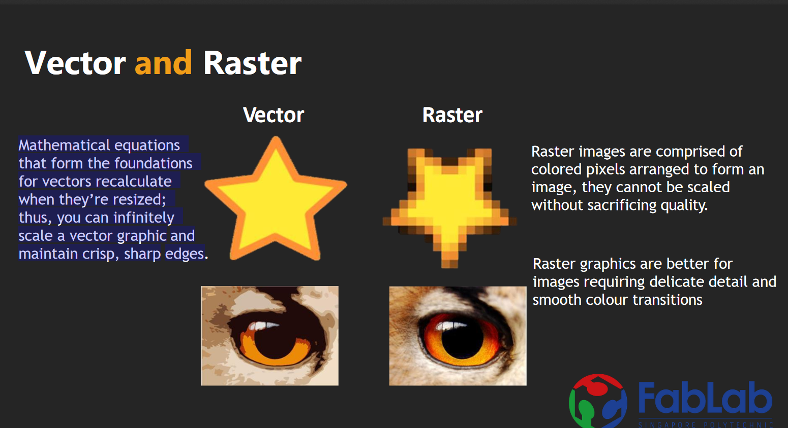

For the CAD design, we would be doing both 3D and 2D modelling. For the 3D modelling, we would use programms like fusion 360 and for the 2D modelling, we would use softwares like Gimp or inkscape.
2D design
For 2D CAD design, we are going use inkspace or gimp. 2D design will be importnat for laser cutting which we will be doing later on. Although the laser cutting will be using coreldraw, as it is a paid software and thus can only be used in school, inkscape can still be used to place the dxf files. On top of 2D drawing, the main difference between vector and raster is that raster graphics composed of individual pixels of colours, while vector graphics are composed of paths, each with a mathematical formula that tells the path how it is shaped and what colour it is bordered with or filled by.

3D design
For 3D design, we will mainly be using fusion 360. For fusion 360, it is actually quite similar to inventor. Thus, it was eaiser to get a grasp of using it. Today, we learnt how to some of the 3d modeling functions, like loft, revolve and extrude. We also learnt shapes like the eggholder, and a nametag. We are also provided websites like this to learn and practice the different 3D objects that can be made. Currently i am using calemeo.com to practice and get a hang of inventor as they have alot of practices that i can do.
Exercise 2
Exercise 3
Sphere in cube

For this model, i created a cube. Then i used the shell function to make the inside of the model hollow. Then i created 3 more sketches with a circle on each and then used the cut function to make the holes through the model. Then i created a offset plane in the middle of the model and made a semicircel, then revolve it to make the sphere in the middle of the model.
Vase
For the vase, there is 2 ways to actually make this vase. The first way is to make multiple circles of different sizes different axises, all stacking on top of 1 another. Then you use the loft function. This will join all the circles together with a smooth curve and make it 3D. Then you use the shell function at the top surface of the object. This will create a opening and make the vase hollow. You still need to specifiy the thickness of the wall. The second method of doing this, is to create and sketch and draw a straight line. On 1 side of the line, you draw HALF of the vase. To draw this half, you can use the spline line to draw. The thing about spline line is that even if you have finished drawing it, you can still adjust it to the shape you. Once you have gotten the right shape, you finish drawing the vase, you have to revolve the shape by clicking the half of the vase as the profile and the straight line that you drawed up as the axis. This creates the vase and then just like the first method, you can use the shell function to make the vase have an opening.
Hollow Spilt box
For the Hollow spilt box, we start by normally creating a box which is not hollow. So make a rectangle then extrude the height. Next use the shell tool and move the curosr till the entire object lights up. Then shell the apportaite thickness and thus you have a hollow box. Then we create a new sketch on the side of the object. On this new sketch, we create the line or spline that you want the box to be seperated, but for this, i just made and wavy spline. Then i finished the sketch and used to the spilt body function. With this, i chose the body to spilt as the hollow box and the spilting tool as the wavy linel. This spilts the box along that wavy line and causes the 2 parts.
Knight chess piece
For the knight piece, we learnt that we had to take a picture from the web and open it as a canvas in inventor. This will place the picture in inventor. From there, you use a combination of spline lines and normal straight lines to trace the canvas(Picture of the knight piece.) Next you revovle the bass of the piece, to make a circular round bass, and since it is impossible to revolve the top of the knight peice, i ended up just extruding it in both directions. /p>
Cube with finger connectors
For this piece we learnt how to use parameters, New components, and the combine function. First we start by creating a new component. Next we set the parameters. For this we created the lenght, width height and all those other values. With this, we could easily adjust the size of the box even we had finished drawing it. We starting by drawing square and setting the the dimensions of the box to the length and width, which set it to the corresponding dimension of what we set in the parameters. Next extruded the thickness of the base and continued by drawing the side of the cube. but this time, on the side of the box that is touching the base. we drew the fingers as 3 small rectangles at the bottom of the cube. We extruded the side inwards as a new object and then mirroed it to the other side. Next we combined the sides together with the base of the target body and the side at the tool body. This created the apporaite cut outs so the the fingers would align and join together. We did the same for all the other sides and there we have a cube with fingers. To make it so that we could laser cut this, we had to make all the sides its own sketch and then save it as a dxf file, which could be open in inkscape.